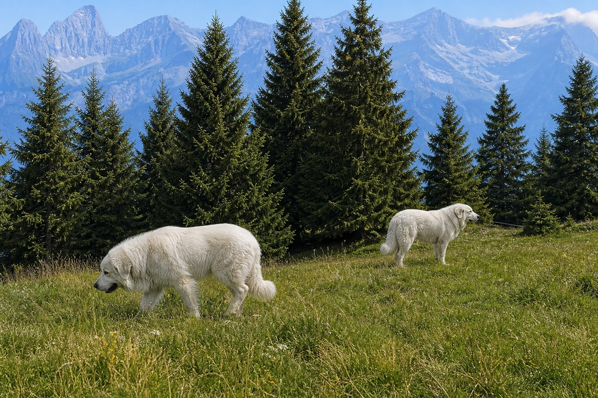

Detour before contact
- Leash your dog and keep them close.
- Go widely around the flock, not between animals.
- If there is no safe space, turn back.

Go back to Safety LibraryYour safest encounter is the one you prevent: notice the herd early, leash before the pasture and create distance around it.
Barking, approaching or placing itself between you and livestock are deterrent behaviours. They are not a reason to approach, test the dog or continue through the herd.
Move from prevention to retreat; do not try to “win” the encounter.
Keep the leash as the default while you can still create distance. If direct contact becomes unavoidable, Explore Savoie advises releasing your dog so they can communicate and retreat. Move away calmly and turn back if the guardian does not settle.
Do not approach the flock, pet or feed the guardian, throw objects or place yourself closer for a photograph.
Short pasture sections with room to detour give you time to see livestock and working dogs before they react.
Herds move. Check current trail reports and follow local signs even when an older report says the pasture was clear.
Clip on before the cattle grid, bells or animals—not after a guardian dog appears.
Adjust standard trail advice for build and instinct.
Prepare for the situations you may meet outside.
Guardian-dog references: Explore Savoie: Meet a mountain dog and Vallée d’Aulps: Comment réagir face à un patou?. Cattle reference: UK Department for Environment, Food & Rural Affairs countryside advice. This is general guidance, not a guarantee of any animal’s behaviour. When in doubt, turn back. Sources checked 25 August 2026.